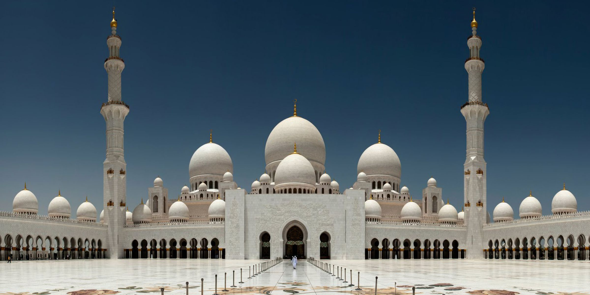
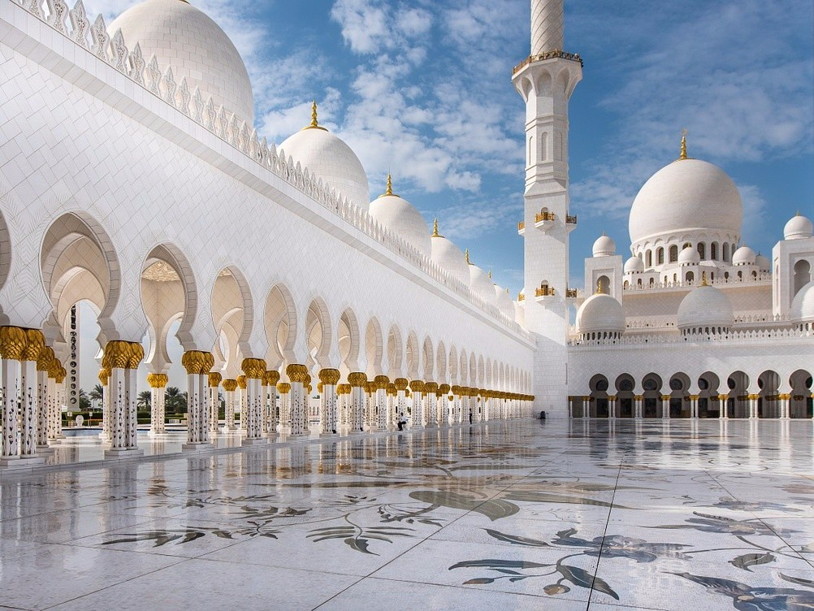
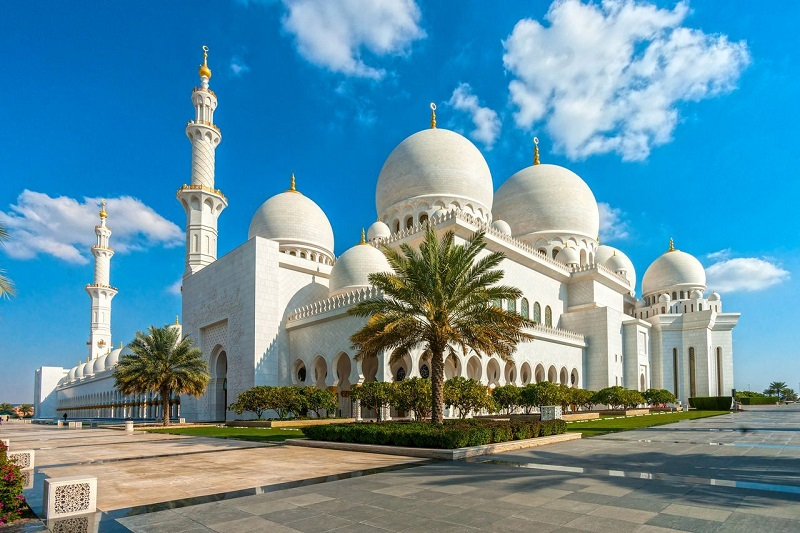
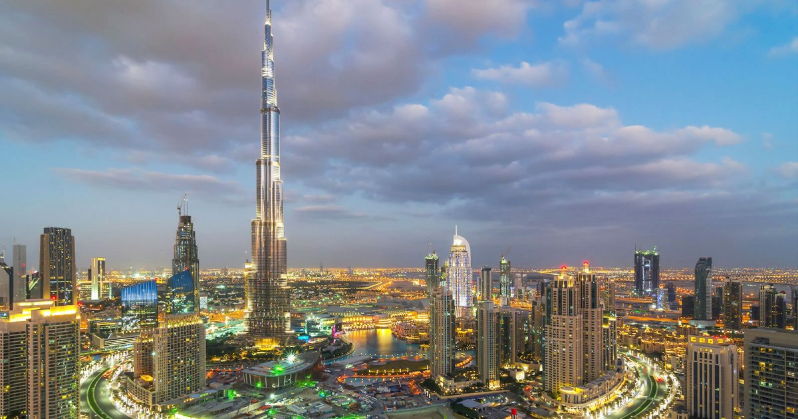
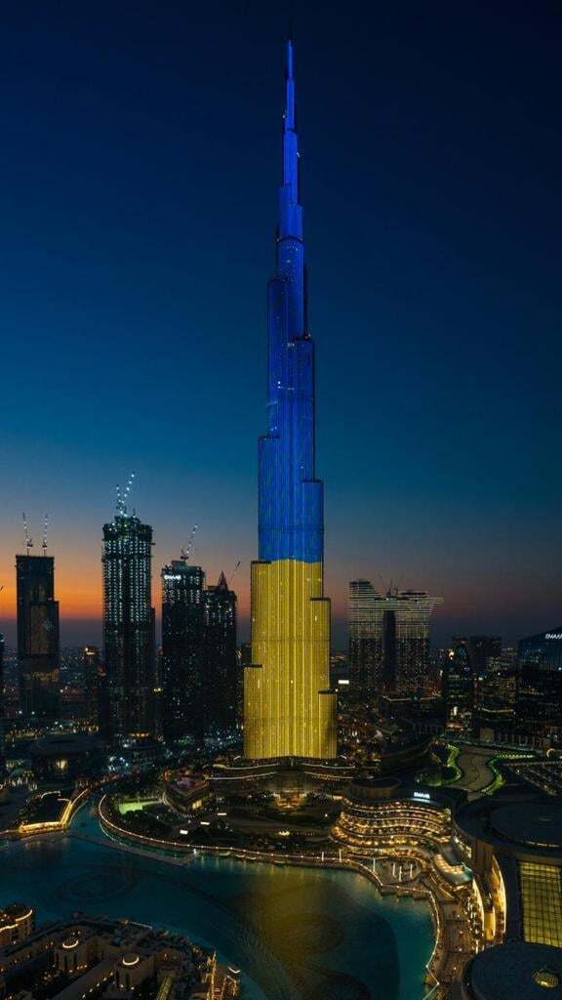
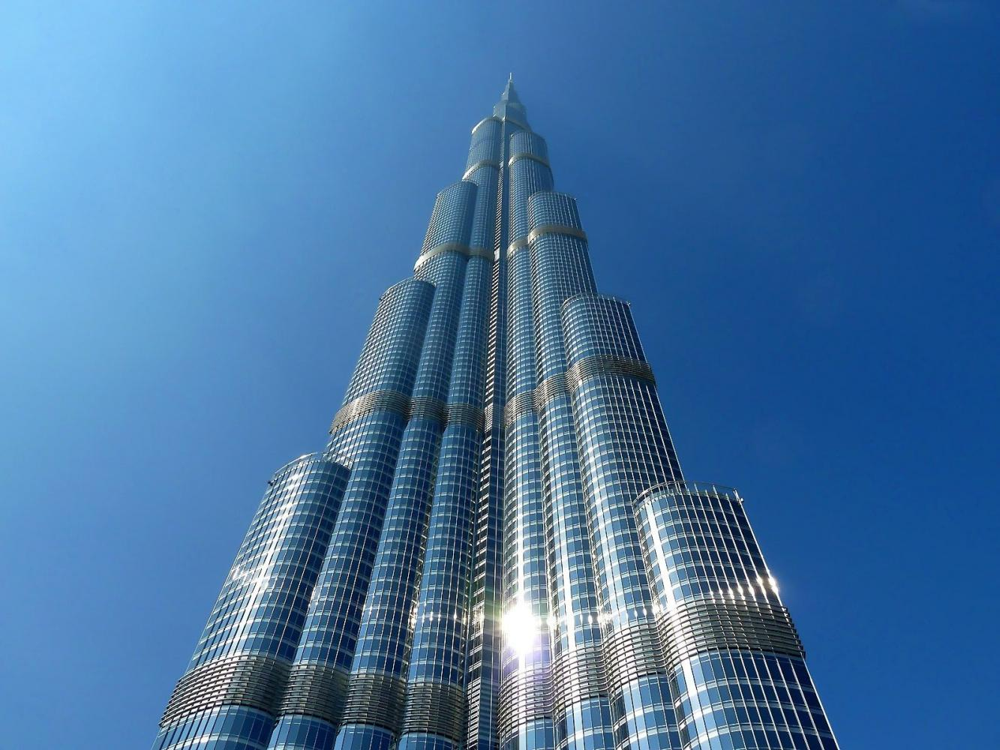
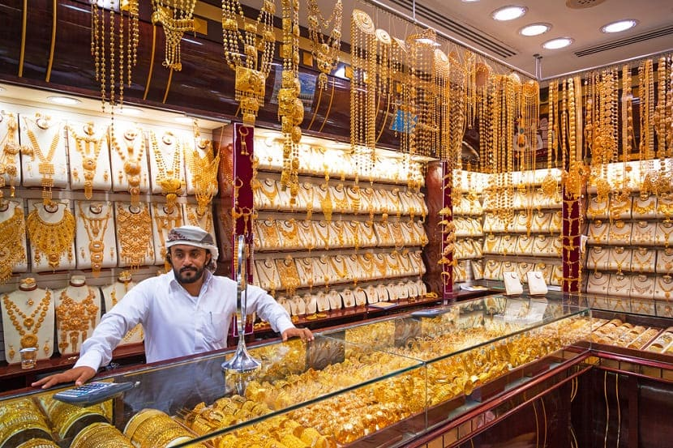
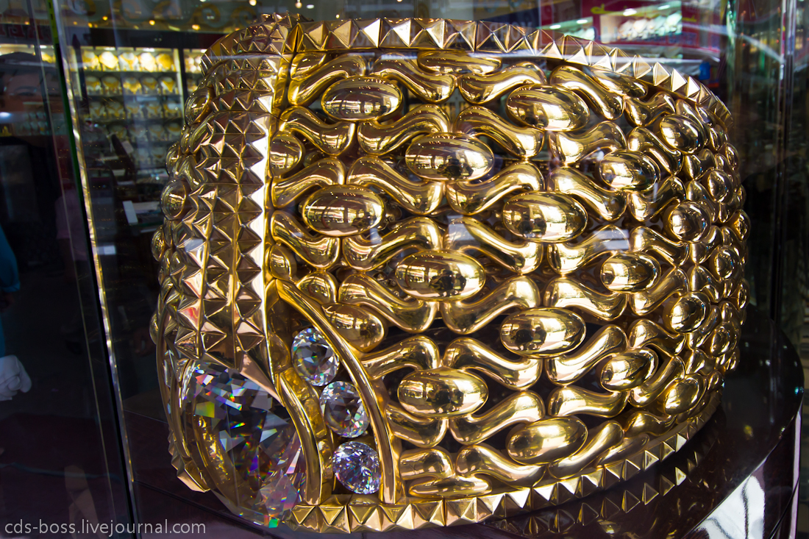
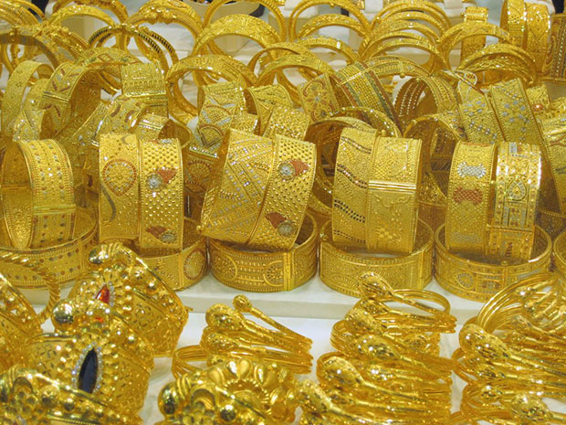

attraction
Grand Mosque
Sheikh Zayed Bin Sultan Al Nahyan Grand Mosque (or White Mosque for short) is a real miracle and one of the most amazing buildings in the UAE. Tourists from all over the world visit Abu Dhabi to see all the splendor and luxury of this truly unique building. The Grand Mosque is located in the middle of two bridges - Mussafah and Maqta. In honor of whom the mosque was built Many mistakenly believe that the mosque is only a means of attracting travelers and one of the manifestations of the local wasteful lifestyle. However, what looks like an illustration to the world famous work "Tales of a Thousand and One Nights" is actually something more. The White Mosque personifies in its "face" deep respect and gratitude to Sheikh Zayd ibn Sultan an-Nahyan. This is the main monument glorifying the great ruler of the United Arab Emirates, who created a wonderful country from poor Bedouin principalities. By the way, the sheikh himself left this world on November 3, 2004, after which he was buried directly in the mosque. White Mosque in Abu Dhabi: things to see An attractive building in itself, the White Mosque also has its own personal attractions. Surprising, not only due to its appearance, but also due to its impressive dimensions, the carpet (an area of 5,627 square meters) was sent to the mosque and is the largest carpet in the whole world. The author of his drawing is the Iranian artist Ali Khaliqi, and the company called "Carpets of Iran" brought the idea to life.About 1200 weavers, twenty technical and thirty working groups worked on the creation of this magnificent work of art. The weight of the carpet exceeds 47 tons, of which 35 tons are given to wool, and 12 tons are occupied by cotton. The second attraction of the mosque is a set of seven chandeliers, the main of which was considered the largest in the world until June 26, 2010. It weighs approximately 12 tons, reaches 15 meters in height and 10 meters in diameter. The uniqueness of the main attraction of Abu Dhabi Every copy of the guidebooks for the UAE and Abu Dhabi, all tourist brochures and every self-respecting guide tells about the White Mosque. The uniqueness of the mosque is not only in its amazing architecture, dazzling wealth and impressive dimensions (this attraction is one of the 6 largest mosques in the world) - it is also one of two similar structures in the world, which everyone is allowed to enter, regardless of their nationality and religion. Only Muslims are allowed into all other mosques. How to visit the Sheikh Zayed Grand Mosque In mid-March 2008, the Ministry of Tourism announced that excursions were open to everyone in the mosque. However, visitors must know and follow a few rules in order to freely walk inside this wonderful structure. It is important to know that the mosque has a strict dress code. Rules for visiting the White Mosque Men are required to wear shirts and trousers that fully cover their arms and legs. Short sleeves and shorts will make a tour of the Grand Mosque impossible. Women must cover their heads with a scarf, completely hiding their hair.Allowed: long skirts or trousers, shirts with long sleeves. It is forbidden to dress in tight-fitting and open clothing. Before entering, you need to take off your shoes, and therefore it is advisable to choose those options for shoes that are easy to take off and put on your foot. It is also forbidden to eat, drink and smoke on the territory of the mosque. Practical information
  Burj Khalifa
Arabic برج خليف - "Khalifa's Tower", until 2010 it was called "Burj Dubai" - "Dubai Tower" - an ultra-high skyscraper with a height of 828 meters in Dubai (UAE), the tallest and most multi-storey building , the tallest building, the only 828-meter and 163-story skyscraper in the world. The stepped shape of the building resembles a stalagmite. The grand opening ceremony took place on January 4, 2010. The building was scheduled to open on September 9, 2009 at the same time as the Dubai Metro, but the opening was postponed to January 2010 due to reduced funding from the developer. Since July 21, 2007 - the tallest building in the world. Since May 19, 2008, it has been the tallest building in the world that has ever existed (before that, the record belonged to the Warsaw radio mast that fell in 1991). The exact height of the structure is 828 m with 163 floors, with 180 meters falling on the world's longest spire. Opening the skyscraper, by that time known throughout the world under the name "Burj Dubai" ("Dubai Tower"), the ruler of the emirate of Dubai, the current Vice President and Prime Minister of the UAE, Sheikh Mohammed bin Rashid Al Maktoum, renamed it, dedicating the building to the President of the UAE Sheikh Khalifa bin Zayed Al Nahyan: "Burj Khalifa" was originally planned as the tallest building in the world. When the skyscraper was still under construction, its design height was kept secret. This was done in case a skyscraper of a higher height was designed somewhere - then adjustments could be made to the design of the Dubai tower. Since construction began, there have been many rumors around the final height of the skyscraper.Initially, it was assumed that the project of the tower with a height of 705 m would be a modified project of the Australian "Grollo Tower [en]" (560 m). The project managers said that the height would be guaranteed to be more than 700 m, that is, the Burj Khalifa, after completion of construction, would in any case become the tallest building on Earth. Some sources spoke of 170 floors in the building. In September 2006, the final height was reported at 916 m, and then at 940 m. The final height was 828 meters with 163 floors (not including technical floors-levels - 46 in the spire and 2 in the foundation). On January 4, 2010, at the official opening of the grandiose Burj Khalifa building, it was reported that the final height of the building is 828], and not 818, as previously thought. The construction of the skyscraper began in 2004 and proceeded at a speed of 1-2 floors per week. Up to 12,000 workers worked daily at the construction site. It took about 320 thousand m³ of concrete and more than 60 thousand tons of steel reinforcement to create it. Concrete work was completed after the construction of the 160th floor, followed by the assembly of a 180-meter spire from metal structures. Especially for the Burj Khalifa, a special brand of concrete was developed that can withstand temperatures up to +50 ° C. The concrete mixture was laid only at night, and ice was added to the solution. Unlike New York skyscrapers, the foundation of the Burj Khalifa is not anchored in rock. In the foundation of the building, hanging piles 45 m long and 1.5 m in diameter were used. There are about 200 such piles in total. The shape of the building is asymmetrical to reduce the effect of swaying from the wind.
  Gold Market
Gold trading in the United Arab Emirates has long been a separate powerful industry that is constantly evolving. For several decades, the Dubai Gold Souk has been offering jewelry for literally every taste and budget. The main gold market of the state of Gold Souk is located on Sikkat al Khail Street, which dazzles with the brilliance of jewelry store windows. In order for the weather not to affect the sales of gold items in any way, the street was covered with a beautiful wooden roof a long time ago. It is convenient to walk along the paved surface, looking at the illuminated shop windows and making purchases. zolotoy_rynok_dubaya_ulica. Note that in Egypt only the Gold Shops on Khan el-Khalili can compete with this place. Golden street. The charm of gold attracts both locals and visitors to the Emirates on Sikkat al-Khail Street. In total, just over 300 meters of the city, sandwiched between two rows of shops and salons, every tourist who comes to the UAE will definitely visit. The Emirates process and sell the most gold in the world. In shop windows, next to bars and coin collections, beautiful jewelry is displayed: tiaras. Traditional wedding decorations are in great demand among the locals. The motives of these products are borrowed from the Bedouins, although the decorations of the inhabitants of the desert were silver. Any accomplished groom must pay a bride price for his bride, he will find everything necessary for this procedure at any time on the shelves of Gold Suk.Gold prices in Dubai The cost of gold jewelry in the Dubai market depends on two main factors: production method product design. If local craftsmen had a hand in a ring or earrings, then the jewelry will be relatively inexpensive. But in stores, along with Indian and Arabic style, European style is increasingly common, and the products are marked by one of the famous designers. As in other areas of trade, here the brand increases the price. Handmade items also cost more than machine-made jewelry. But since Dubai annually imports about 700 tons of gold, a quarter of which remains on the domestic market, the cost of jewelry barely pays for the work of the craftsmen. A handmade bracelet costs around AED 500, while an industrial one will set you back around AED 300. For a fee, the master can put a nominal stamp, but with a large purchase, the mark will be made completely free of charge. Path to gold. Since all tourists who come to the UAE, without exception, want to visit Gold Souk, corresponding signs have been installed especially for them throughout the city. If you have no desire to play trackers, then you can simply use the services of a taxi. Arriving at the market, do not rush to leave all the money in the first store. Even if you prepared in advance, choosing goods via the Internet and discussing the terms of the purchase and the amount, take a walk anyway, gain positive emotions! In no case do not forget to bargain, and quite fiercely.If you first take an interest in the price of gold on world markets on a particular day, you will get a significant advantage: the Arabs are ready to bargain literally up to the minimum margin, but they will definitely not sell the product to you cheaper than the cost of purchasing the material. When buying goods at the Dubai Gold Souk, you don’t have to worry about its quality: sellers are periodically checked by an independent commission, which can take away a license at the slightest hint of fakes or fakes. In addition, each seller declares his gold imports, so violations can always be traced. It is worth noting that over the past decades, no one has risked licenses. Last Minute Hotels in Dubai
  